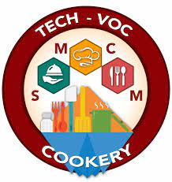

STRAND
What is ABM?
The Accountancy, Business, and Management Strand or ABM strand seeks to prepare the young business leaders of tomorrow. ABM strand paves the way for business-related college degrees. It teaches the basic concepts of financial management, accounting, and corporate operations. The programs under this strand aims to instill crucial skills that one needs to perform well in their future careers and businesses

What is HUMMS?
The HUMSS Strand is for students who intend to pursue studies in the fields of Humanities and Social Sciences at the tertiary level. This is for those who are considering taking up journalism, communication arts, liberal arts, education, and other social science-related courses in college. If you take this strand, you could be looking forward to becoming a teacher, a psychologist, a lawyer, a writer, a social worker, priest, or a reporter someday.

What is COOKERY?
Responsive to the ever-changing market of food, restaurant, and hotel industries. The growth of food and hospitality industries demand qualified people to accommodate these needs of customers. HIGHLIGHTS / STRENGTH OF THE PROGRAM.